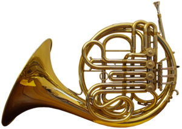

호른(독일어: Horn) 또는 프렌치 호른(French horn)은 금관악기의 일종으로, 나팔꽃 모양의 관이 특징이다.
오늘날 오케스트라에 쓰이는 호른은 밸브라고 하는 음높이를 변화시키는 데 쓰는 장치를 가진 금관악기이며, 밸브를 가지고 있지 않은 자연혼과 구별할 때에는 밸브 호른이라고 한다. 외관상의 특징은 정원상(正圓狀)으로 감긴 관과 매우 큰 벨(직경 약 30cm)에 있으나 음빛깔의 특징은 마우스피스와 관의 형상에서 유래한다. 마우스피스의 캡은 트럼펫의 것과 같이 불룩한 만곡은 없으며 느린 곡선으로 그대로 스로트와 연결되어 있다. 관은 매우 길며 표준적인 바조는 370cm 정도이고 직경은 6-7mm로 가늘다. 이 관의 특성은 호른으로 고차배음(高次倍音)의 취주(吹奏)를 쉽게 하며, 가늘고 긴 마우스피스와 작용하여 깊고 둥근 음빛깔을 나게 하는 것이다. 밸브엔 트럼펫과 같이 피스톤식과 로터리식이 있으며, 일반적으로는 트럼펫과 반대로 로터리식이 보급되어 있다. 밸브의 수효는 기본적으로는 3개이나 그 이상의 것도 있다. 현재 밸브 호른에는 싱글과 더블이 있다. 싱글 호른에는 바조와 내림나조의 2가지가 있으며, 3개의 밸브를 써서 반음계적 변화음을 낸다. 더블 호른은 바조와 내림나조를 하나로 합친 것으로서 왼손 엄지손가락으로 조작되는 4개째의 밸브로 바조에서 완전4도 위의 내림나조로 바꿀 수가 있다. 더블호른의 음넓이는 내림나음으로부터 바2음까지로 기보(記譜)는 오늘날에는 대체로 바조의 조옮김(移調)악기로 하여 실음보다 완전5도 높이 기보된다. 이전에는 음보표에서는 완전5도 높은 복잡한 기보를 하고 있다.